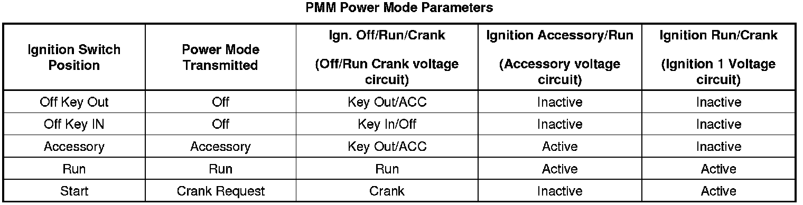

Power Mode Description and Operation
Power Mode Description and Operation
Serial Data Power Mode Master
Power to many of this vehicles circuits is controlled by the module that is designated the power mode master (PMM). This vehicles PMM is the body control module (BCM). The ignition switch is a low current switch with multiple discrete ignition switch signals to the PMM for determination of the power mode that will be sent over the serial data circuits to the other modules that need this information. The PMM will also activate relays and other direct outputs of the PMM as needed. The PMM determines which power mode (Off, Accessory, Run, Crank Request) is required, and reports this information to other modules via serial data. Modules which have switched voltage inputs may operate in a default mode if the PMM serial data message does not match what the individual module can see from its own connections.
The PMM receives ignition switch signals to identify the operators desired power mode. The PMM Power Mode Parameters table below illustrates the correct state of these input parameters (circuits) in correspondence to the ignition switch position:

Relay Controlled Power Mode
The body control module (BCM) uses the discrete ignition switch inputs Off/Run/Crank Voltage, Accessory Voltage, and Ignition 1 Voltage, to distinguish the correct power mode. The BCM, after determining the desired power mode, will activate the appropriate relays for that power mode.
The RAP relay remains on for a timed period after the Ignition key is removed. Refer to Retained Accessory Power (RAP) Description and Operation (Retained Accessory Power (RAP) Description and Operation) for more information on the retained accessory power (RAP) function.
BCM Awake/Sleep States
The body control module (BCM) is able to control or perform all of the BCM functions in the awake state. The BCM enters the sleep state when active control or normal monitoring of system functions has stopped and a time limit has passed. The BCM must detect certain wake-up inputs before entering the awake state. The BCM monitors for these inputs during the sleep state.
The BCM will enter the awake state if any of the following wake-up inputs are detected:
* Activity on the serial data line.
* Detection of a battery reconnect.
* Any door open signal.
* Headlamps ON.
* Key-in-ignition.
* Ignition ON.
* Park lamps ON.
* Keyless entry or remote start message.
The BCM will enter a sleep state when all of the following conditions exist:
* The ignition switch is OFF, key out.
* No activity exists on the serial data line.
* No outputs are commanded.
* No delay timers are actively counting.
* No wake-up inputs are present.
If all these conditions are met, the BCM will enter a low power or sleep condition.